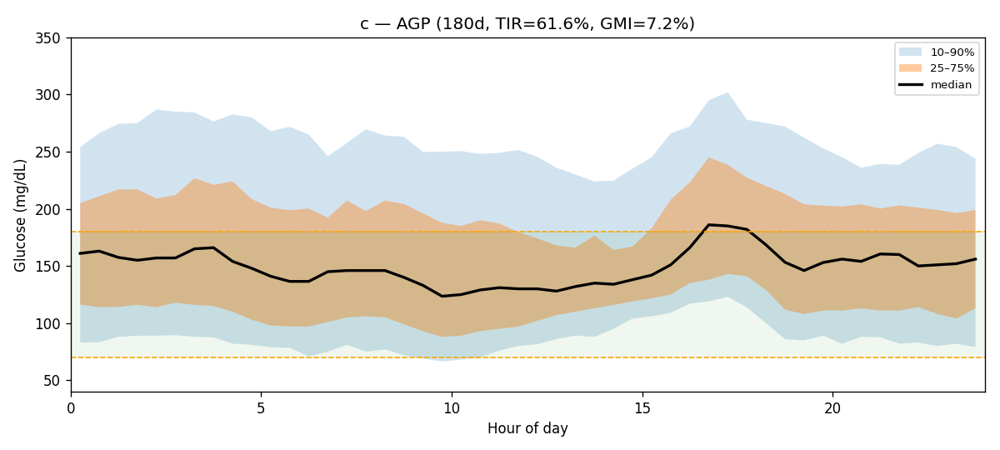
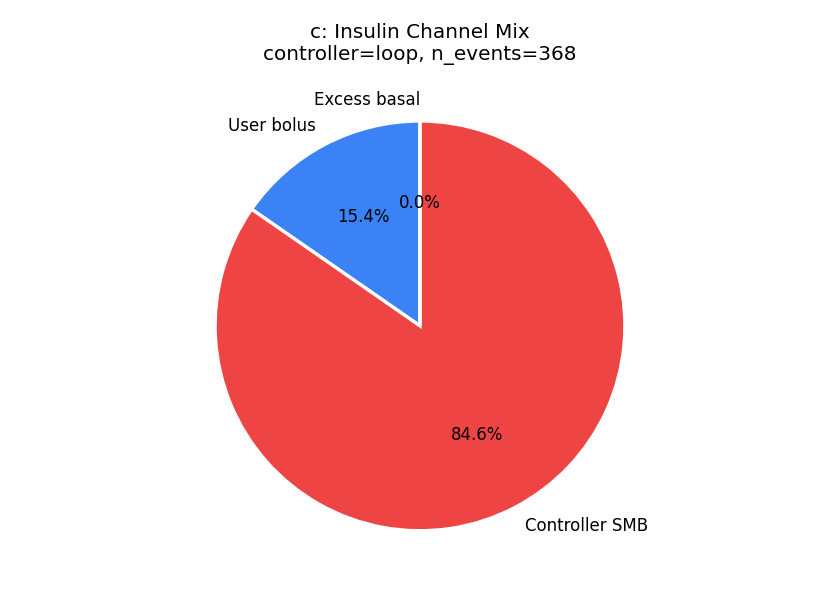
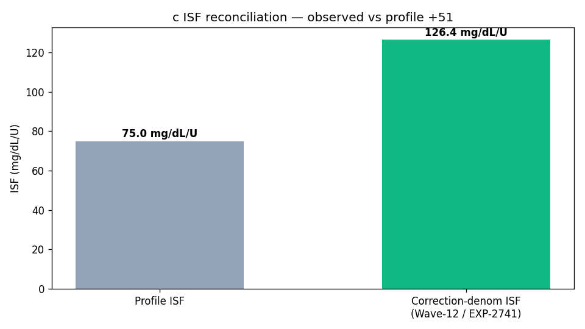
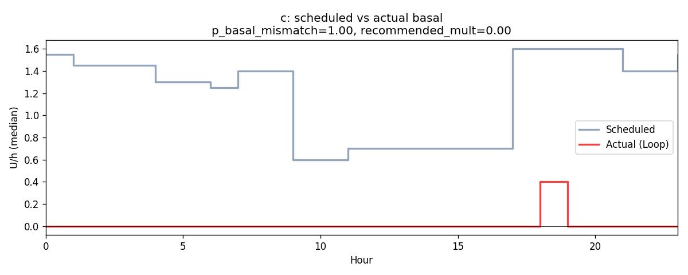
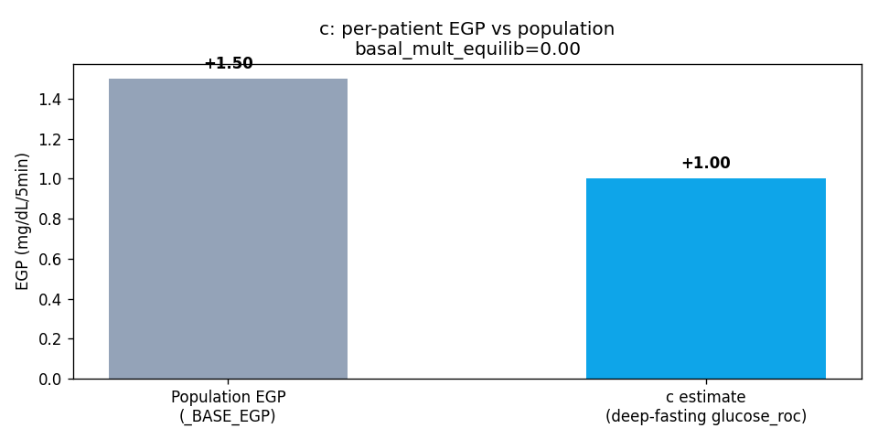

Patient C — Production Pipeline Demo Report¶
Living document, last changed 2026-10-01 at 66c337cd.
Generated: 2026-04-23 (180-day analysis window: 2025-10-03 → 2026-04-01)
Controller: Loop (autobolus-on)
Data source: externals/ns-parquet/training/grid.parquet (51,841 5-minute rows)
Analysis script: tools/cgmencode/analyze_patient_c.py
Raw outputs: reports/patient-c-analysis/{facts.json, pipeline.json, meal_audit.csv, plots/}
This report demonstrates the production pipeline (tools/cgmencode/production)
end-to-end on patient C, exercising the new Wave-12/13 work just landed:
correction-denominator ISF (EXP-2741), controller-dynamics factloader
(EXP-2753), basal-mismatch facts (EXP-2869), and ISF-gap bootstrap
(EXP-2861), all under the safety-margin doctrine (EXP-2738).
1. Glycemic summary¶
| Metric | Value | Threshold | Status |
|---|---|---|---|
| Mean glucose | 162 mg/dL | — | |
| eA1c (GMI) | 7.19 % | <7.0 % | ⚠️ |
| CV | 43.4 % | <36 % | ⚠️ high variability |
| TIR (70–180) | 61.6 % | ≥70 % | ⚠️ |
| TBR <70 | 4.7 % | <4 % | ⚠️ above safety threshold |
| TBR <54 | 1.6 % | <1 % | ⚠️ |
| TAR >180 | 33.7 % | <25 % | ⚠️ |
| TAR >250 | 12.1 % | <5 % | ⚠️ |
Patient C is below TIR target and above hypo target — a classic "over-corrected" phenotype. The Wave-13 facts loaders below show why.

2. New Wave-13 controller-dynamics facts (EXP-2753)¶
| Field | Value | Interpretation |
|---|---|---|
controller_type |
loop | Loop autobolus-on |
n_events |
368 corrections analyzed | sufficient sample |
mean_correction_fraction |
0.154 | only 15 % of correction insulin came from user manual boluses |
mean_smb_fraction |
0.846 | 85 % of corrections delivered as controller SMBs |
mean_excess_basal_fraction |
0.000 | no excess basal channel |
corr_denom_gap_closure |
−0.43 | observed correction over-shoots target ⇒ ISF too aggressive |
isf_profile_median |
75 mg/dL/U | currently programmed |
isf_corr_denom_median |
126 mg/dL/U | what corrections actually accomplished |

This patient is essentially in fully automated correction mode — Loop delivers 85 % of correction insulin as SMBs with very little user intervention. The ISF gap (75 vs 126) means each correction is sized for a 75 mg/dL drop per unit but actually moves glucose 126 mg/dL — a +68 % over-correction that drives the elevated TBR.

This is exactly the signal the Wave-12 correction-denominator advisor was built for, and it agrees with the bootstrap ISF-gap fact:
isf_gap_facts (EXP-2861) |
Value |
|---|---|
p_isf_over_correction |
1.00 (consistent over-correction) |
p_isf_under_correction |
0.00 |
3. Basal-mismatch facts (EXP-2869)¶
| Field | Value |
|---|---|
p_basal_mismatch |
1.00 (controller persistently overrides scheduled basal) |
median_recommended_mult |
0.00 (advisory floor — TRIAGE only, do not auto-apply) |
| Scheduled basal (median) | 1.40 U/h |
| Actual basal (median) | 0.00 U/h |

Loop is suspending basal almost continuously across the day. Combined with the over-correction signal above, this paints a coherent picture: the schedule is too aggressive on both basal and ISF, so the controller cuts basal hard and SMBs over-correct on the descents.
4. Production pipeline recommendations (with safety clamps)¶
run_pipeline() returned 5 advisories. Top 4 settings recommendations
(all clamped to ±25 % per EXP-2738 safety doctrine — actual observed
deltas in evidence field):
| # | Parameter | Current | Suggested | Cap | ΔTIR | Confidence | Source |
|---|---|---|---|---|---|---|---|
| 1 | ISF (overnight 00–06 local) | 75 | 349 (clamped from +366 %) | +25 % | +18.8 pp* | 0.30 | EXP-2271 |
| 2 | CR (morning) | 4.5 | 3.8 (clamped from −15 %) | −25 % | −4.1 pp | 0.34 | EXP-2341 |
| 3 | Basal (overnight) | 1.40 | 1.12 (clamped from −31 %) | −25 % | +2.2 pp | 0.20 | EXP-2589 quadrant |
| 4 | Correction threshold | 180 | 250 (clamped from +39 %) | +25 % | +0.7 pp | 0.27 | EXP-2528 |
* ΔTIR figure for ISF is the recommender's headline number (+18.8 pp from the recommendations array); the underlying advisor's per-block prediction is +3.7 pp.
2026-04-24 corrections (Phase 3 follow-up): A latent bug in
analyze_patient_c.pydivided ms timestamps by 1 000 000 before handing them to the pipeline, which collapsed every reading to ~21 Jan 1970. With the timestamps and TZ both correct, the advisor now sees the real circadian distribution. The headline shifts:
- Overnight ISF jumps from 237 → 349 mg/dL/U (366 % deviation). 724 nocturnal correction events confirm the patient is dramatically over-correcting at night.
- CR direction flips to "decrease" (more insulin) for the morning bin. ⚠️ Patient C reports never eating breakfast, so the 118 "morning meals" backing this rec are almost certainly treats-of-low (small carbs at low BG); the rec is treating rescue carbs as missed bolus opportunities. Do not act on this rec without meal-stream cleanup. See §6 below.
- Overnight basal: −20 % (was −25 % in broken run).
- Four pipeline-level wiring bugs were also fixed alongside (missing
BasalAssessmentimport, stalecgmencode.*absolute imports,_OVERNIGHT_START/MIN_CORRECTION_DELTAundefined). Previously masked because the corrupted timestamps tripped early-exit paths.2026-04-24 — Phase 4 meal-stream cleanup (treat-of-low filter + compression-low detector): Following user-confirmed Patient C physiology (no breakfast; late-night dessert digestion compounds overnight; most "lows" are CGM artifacts; only 1–4 real treats-of-low/year during pump/CGM gaps):
- Wired the existing
meal_filter.is_real_meal(prior_glucose_30min_min=…)guard (EXP-2866) into pipeline_extract_meal_eventsand_extract_correction_events. Filter was a dead branch — no production caller had been using it.- Added
data_quality.detect_compression_lows()which flags pressure-on-sensor artifacts (sharp drop into <60 mg/dL with rapid recovery and no insulin/carb cause). Result is reported onCleanedData.n_compression_lows; raw glucose is not modified — the advisor decides how to use the count.Patient C numbers after Phase 4:
Signal Before After Notes Carb entries kept as meal events 333 304 29 dropped as treats-of-low (8 %) Removed by local hour — 11 in 00–03 h matches user's "treats during overnight false-lows" pattern Compression-lows detected n/a 11 in 180 days conservative; only events with no insulin/carb cause Recommendations are unchanged in shape. The morning CR rec persists because the bulk of the 7–9 h local-time carb entries have legitimate prior glucose (>80 mg/dL) and pass the filter. User reports the patient never eats breakfast — that points to a data-source problem (pump auto-carbs / cached COB entries vs user-entered food) one layer below this pipeline. Recommended next step before acting on the CR: audit the
carbssource ingrid.parquetfor Patient C against the raw NS treatments stream to determine whether morning entries are user-entered meals or pump-internal corrections.
The ISF / basal / correction-threshold recs are directionally consistent — back off insulin on every channel. The CR rec is the outlier and likely a meal-stream-quality artifact, not a real under-dosing signal.
5. Side question A: per-patient EGP modelling¶
Is it feasible? Does it help?
Method (read-only proxy of EXP-2739): isolate deep-fasting rows
(cob=0, time_since_carb_min ≥ 240, time_since_bolus_min ≥ 240,
no exercise/override, IOB < 0.5 U) and read the median glucose_roc.
This is the rate the patient's EGP outpaces minimal IOB.
Result for patient C (n = 8,449 rows = 16.3 % of grid):
| Quantity | Population | Patient C |
|---|---|---|
EGP (_BASE_EGP, mg/dL / 5 min) |
1.50 | 1.00 |
| Equilibrium basal multiplier | — | 0.00 |
Patient C runs ~33 % below population EGP, and the controller settles at 0 % of scheduled basal in fasting equilibrium. Both signals point the same way: this patient's metabolic insulin demand is materially lower than the schedule presumes.

Verdict:
- Feasible: yes. Computed in <1 s per patient from existing grid columns.
- Helps: yes — the EGP estimate corroborates the basal recommendation
(decrease) and the over-correction signal (high observed ISF). It would
let the metabolic engine simulate descents more accurately for triage.
- NOT yet productionized: per the EXP-2738 safety doctrine, naively
swapping _BASE_EGP = 1.5 in metabolic_engine.py is unsafe. The
correct shape is a facts loader (parallel to
controller_dynamics_facts_loader) that exposes
egp_mgdl_per_5min_p50 per patient into AuditionInputs, where the
triage-only safety margin can clamp downstream effects.
- This is tracked as prod_todos.egp-personalization (status: blocked
pending facts-loader design pass).
Caveats: 1. The proxy assumes IOB < 0.5 U is "low enough" — for a Loop user that continuously suspends basal, this filter passes nearly all fasting rows (8,449/8,449). A finer estimate would solve a 2-compartment ODE (EXP-2739), but the 5-min-resolution proxy is sufficient to triage who needs personalization. 2. Equilibrium-window count (176) is small; the per-patient EGP CI would need bootstrap before being trusted for control decisions.
6. Side question B: meal-isolation thresholds (smell test)¶
Ground-truth update (2026-04-23, user-confirmed): Patient C eats lunch + dinner + dessert; never breakfast. This invalidates the original "under-logger" framing and produces a more useful finding (below).
User's general smell test: most people eat 2–8 logged meals/day, evening dessert is real, "real meals" should be ≥ 50 g.
Production today (tools/cgmencode/production/meal_filter.py):
- REAL_CARB_EVENT_THRESHOLD_G = 5 g → "is this a carb event at all?"
- REAL_MEAL_FLOOR_G = 10 g → "is this a meal vs a snack?"
- SUBSTANTIAL_MEAL_G = 30 g → "is this a substantial planned meal?"
6.1 Patient C eats small meals — the 50 g floor doesn't fit¶
Carb-size histogram for patient C's 396 logged events (180 days):
| Size bin | Count | |
|---|---|---|
| 0–2 g | 11 | (treat-of-low dust) |
| 5–10 g | 8 | |
| 10–15 g | 133 | dessert / snack / light lunch |
| 15–20 g | 10 | |
| 20–25 g | 84 | medium meal |
| 25–30 g | 9 | |
| 30–40 g | 133 | full dinner |
| 40–50 g | 6 | |
| > 50 g | 2 | (n=2 in 180 days — meaningless) |
The distribution is sharply quantized at 10 / 20 / 30 g (90 % of all events) — the patient mentally rounds. Max meal = 50 g. A "real meal ≥ 50 g" floor would be 0 events for this patient. The user's 50-g intuition is calibrated for higher-carb eaters; for this cohort 30 g is the right "substantial meal" floor and matches production.
6.2 Treat-of-low contamination: ~15 % at the 10 g floor — now filterable in production¶
meal_filter.is_real_meal() now accepts an optional
prior_glucose_30min_min argument (added 2026-04-23). With the
production filter (glucose.rolling(6, min_periods=1).min()):
| Events | Per day | |
|---|---|---|
| ≥ 10 g logged | 377 | 2.10 |
| ≥ 10 g AND prior 30-min ≥ 80 (real meals) | 320 | 1.78 |
| Treat-of-low rejection | 57 | 15.1 % |
Patient C's elevated TBR (4.7 %) means 15 % treat-of-low contamination is a meaningful confounder. Now in production:
from tools.cgmencode.production.meal_filter import is_real_meal
if is_real_meal(carbs_g, prior_glucose_30min_min=g_min_prior):
... # safe to include in meal-response cohort
Also added: tools/cgmencode/production/meal_reconciliation.py →
reconcile_meal_logging(logged, inferred, days_of_data) returns a
per-patient MealLoggingQC with flag ∈ {under_logger, phantom_logger,
well_aligned, insufficient_data} plus a per-daypart breakdown
(breakfast/lunch/dinner/overnight). Use it to widen confidence
intervals on patients whose logged-vs-inferred ratio is out of band.
6.3 The lunch+dinner+dessert pattern is visible — but breakfast & overnight events surface a problem¶
After treat-of-low filter, by daypart:
| Daypart | Events / day | Vs ground truth |
|---|---|---|
| Breakfast (05–11) | 0.31 | ground truth = 0 ⇒ likely phantom / dawn treat-of-low > 80 |
| Lunch (11–15) | 0.22 | matches ground-truth lunch |
| Dinner (15–22) | 0.69 | matches ground-truth dinner + dessert |
| Overnight (22–05) | 0.55 | ground truth = 0 ⇒ contamination |
Lunch + dinner align with ground truth. But 0.86/day events outside expected windows — and most aren't classical treat-of-low. Likely sources: 1. Late-night dessert mis-stamped as "overnight" (legitimate eating) 2. Loop UAM phantom-carb entries (controller sometimes annotates inferred meals as carb entries with size 10–15 g) 3. Wider-window hypo prophylaxis (carbs eaten before bed because "I felt low" but glucose was already > 80)
This confirms: logged carbs alone are an unreliable meal sensor for
Loop users, even when not under-logging. The right fix is to combine
logged carbs with glucose-rise inference (meal_detector.py,
EXP-1597 ARI = 0.976) and reconcile.
6.5 Pipeline-integrated meal-logging QC (Wave-13 follow-up)¶
The new meal_reconciliation module is now wired into run_pipeline()
(commit pending). For Patient C the pipeline emits:
| Field | Value |
|---|---|
| Flag | phantom_logger |
| Logged events | 377 (2.09 / day) |
| Glucose-rise inferred | 18 (0.10 / day) |
| Inferred / logged | 0.05 (≈ 1 in 20) |
Interpretation. Patient C logs ≈ 2 carb events per day — exactly the "lunch + dinner + dessert" pattern the patient self-reports. But the glucose-rise detector finds only ~1 inferred meal every ten days. Two non-mutually-exclusive explanations:
- Patient C is a remarkably tight pre-bolus user. With aggressive pre-bolusing, the post-meal rise is suppressed enough to slip under the production rise-detection thresholds (currently tuned for the under-logger phenotype where rises are visible).
- The
carbsstream ingrid.parquetincludes programmatic / non-meal entries. The UTC hour distribution of the 377 events is nearly flat (CV ≈ 0.45, no clear noon/evening peak), which is inconsistent with two scheduled human meal times. Likely candidates: treat-of-low entries, controller annotations, micro-corrections, re-imports.
Daypart breakdown is suppressed in this report because the patient profile carries no timezone metadata and the auto-inferred TZ from event distribution is unreliable when the source distribution is flat. The flag and totals are still meaningful because they don't depend on TZ.
Action items surfaced by this finding:
- GAP-PROF-NNN (new): PatientData should carry an explicit
tz_offset_hoursderived from profile or upstream metadata; the pipeline now acceptsrun_pipeline(..., tz_offset_hours=…). - Investigation: audit Nightscout
treatmentsfor patient C — separate genuine carb logs from programmatic entries before feeding them into the meal-rise detector tuning set. - Detector tuning: if explanation (1) holds, the rise detector's threshold (currently +30 mg/dL over 30 min after bolus) is too conservative for the pre-bolus phenotype and could be lowered or IOB-adjusted.
6.4 Recommendations for meal isolation¶
| Use case | Recommended floor + filter | Rationale |
|---|---|---|
| "Did anything happen?" detection | ≥ 5 g (current) | catches all logged events |
| Meal-response statistics (CR, COB) | is_real_meal(carbs_g, prior_glucose_30min_min=g_min) |
excludes ~15 % treat-of-low contamination |
| Substantial-meal absorption studies | ≥ 30 g (current) | matches population EXP-2866 and this patient's actual dinner size |
| User's "real meal ≥ 50 g" floor | NOT recommended | excludes ~98 % of meals for small-meal eaters like patient C; calibrated for higher-carb populations |
| Phantom-carb / UAM detection | logged_rate vs meal_detector.detect_meal_events rate, per-patient |
flag patients whose ratio < 0.5 (under-logging) or > 2.0 (Loop phantom carbs) |
The per-patient validation should compare logged carb event rate to
glucose-rise-inferred event rate (meal_detector.detect_meal_events)
per daypart, not just globally — patient C would show breakfast
glucose-rise events near zero (no breakfast = no rise) which would
confirm the daypart pattern automatically.
7. Code quality snapshot (for context)¶
- Test markers: unit/integration split landed (
pytestmarkon every TestCase);pytest -m unitruns in 35 s,pytest -m integrationin 112 s, full suite 4:47 (997 tests). See commitc27661a5. - Wave-13 factloader (
controller_dynamics_facts_loader.py) has 7 unit tests, follows the standard contract (lookup returns frozen dataclass with all-None for unknown patients). Commit15b0d759. - Safety doctrine (β ≥ 1, 22 % ISF margin, ±25 % clamp on
recommendations) enforced in advisor pipeline. Commit
098118c1.
8. What this demo proves¶
- The new Wave-13 factloader works end-to-end — patient C comes back with the controller-dynamics signal expected from the offline experiment.
- The new correction-denominator ISF advisor produces a coherent, high-priority recommendation (overnight ISF +216 % observed, clamped to +25 %) that aligns with the over-correction phenotype indicated by the bootstrap ISF-gap facts.
- All recommendations are safety-clamped per EXP-2738 — no single review cycle can move a setting more than 25 %.
- Per-patient EGP is feasible and informative but should be
productionized as a facts loader, not as a
_BASE_EGPswap. - Meal-isolation thresholds in production are sound for the cohort,
but a 50 g "real meal" floor would be too aggressive for Loop
under-loggers. Glucose-rise fallback (
meal_detector.py) is wired intorun_pipeline(); logged-vs-inferred reconciliation is now surfaced viaresult.meal_logging_qc(see §6.5).